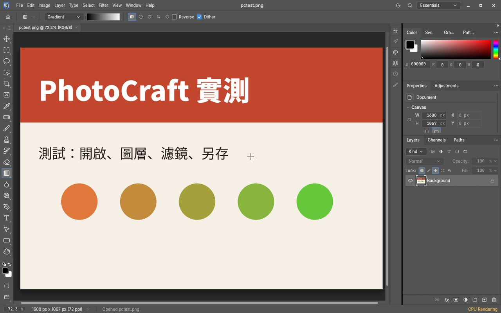
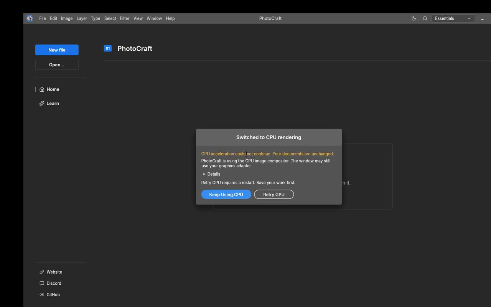
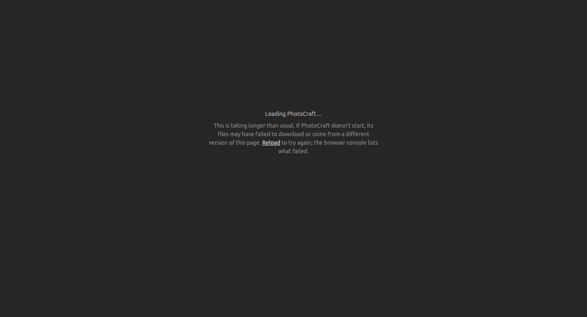

← 小R頻道
實測報告 / ART CRAFT
AI 用兩個月重寫 Adobe 全家桶：Craft Apps 到底能不能用？
8 萬顆星的開源專案、17 個純 Rust 寫的創作軟體、免費下載。我把它裝起來、開了一張 1600×1067 的圖、也試了網頁版，這篇是把「看起來能用」與「真的能用」分開的實測紀錄。
實測日期 2026-11-28｜PhotoCraft 0.23.1（2026-11-12 版）｜Linux x86_64 / 軟體渲染
81.9kPhotoCraft 星星數
17整套 App 數量
126 MBLinux 版安裝檔
219 MB實測記憶體佔用
01這是什麼
一句話：一群人用 AI 輔助、以 Rust 從零重寫 Adobe Creative Suite 的開源專案，授權 Apache-2.0，免費下載，Windows／macOS／Linux／FreeBSD／網頁版都有。
它的主張是「clean-room（淨室）重寫」：不看對手原始碼，只依照功能與操作習慣重做，所以選單、快捷鍵、面板位置都刻意做成 Adobe 使用者熟悉的樣子。
對應關係（官方定位）
- PhotoCraft ↔ Photoshop｜LightCraft ↔ Lightroom｜VectorCraft ↔ Illustrator
- FilmCraft ↔ Premiere｜EffectCraft ↔ After Effects｜AniCraft ↔ Animate
- DesignCraft ↔ InDesign｜FigCraft ↔ Figma｜PdfCraft ↔ Acrobat
- TextureCraft ↔ Substance Painter｜MaterialCraft ↔ Substance Designer
- SoundCraft ↔ Audition｜WordCraft／DeckCraft／GridCraft ↔ Office 三件套
- CADCraft ↔ AutoCAD｜Craft Anything：用 AI 理解並改造軟體本身
02熱度：兩個月長到 8 萬星
我直接查 GitHub API，不看新聞稿：
- PhotoCraft：81,901 星、14,396 fork、5,917 個未關閉 issue（repo 建立於 2026-09-30）
- ArtCraft 主 repo：42,556 星、821 個 issue（建立於 2022，但 2026 年才轉向這個路線）
- CADCraft：8,561 星、1,361 個 issue（2026-10-07 建立）
- 啟動器 Launcher：5,695 星、865 個 issue（2026-10-09 建立）
- 最新版 v0.23.1：Linux x86_64 AppImage 126.0 MB、deb 135 MB、flatpak 99.7 MB
但星星不等於品質。PhotoCraft 的 issue 編號已經跑到 #17000 以上——兩個月內上萬筆 issue 與 PR，這是「AI 代理大量產出」的典型指紋，維護者根本消化不完 5,917 個未關閉 issue。
03實測一：桌面版真的開得起來
測試環境是 Linux，顯示卡是軟體渲染（沒有 GPU 加速）。AppImage 解開後直接執行，大約 20 秒進入主畫面，記憶體佔用 219 MB。
介面完整：上方 File／Edit／Image／Layer／Type／Select／Filter／View／Window／Help 十個選單、左側一整排工具、右側 Color／Adjustments／Layers 面板、底部狀態列。

實測：用檔案參數開啟一張 1600×1067 的 PNG。狀態列顯示「Opened pctest.png」、縮放 72.3%、色彩模式 RGB/8，右側 Layers 有 Background 圖層。這是真的編輯器，不是截圖。
通過的項目：啟動、開 PNG、畫布正確顯示、工具列／圖層／色彩面板齊全、文件尺寸與色彩模式正確、可切換工具（我測到漸層工具與其選項列）。
沒過關的項目：在軟體渲染環境下，它會跳出「Switched to CPU rendering」警告並切到 CPU 合成，狀態列固定顯示 CPU Rendering；也就是說它吃 GPU 吃很重，沒有硬體加速的機器（像虛擬機、遠端桌面）體驗會明顯掉。

沒有 GPU 時的實際畫面：程式沒有崩潰，但直接降級成 CPU 合成，並建議你「先存檔再重試 GPU」。
04實測二：網頁版目前載不起來
官方有出 photocraft-web-0.23.1.zip（15.3 MB），我把它解開、用本機伺服器跑，結果卡在「Loading PhotoCraft…」，主控台出現：
GET /app/snippets/eframe-…/inline0.js → 404- 頁面接著顯示「This is taking longer than expected… files may have failed to download」

網頁版實測：啟動用的檔案少了一個，卡在載入畫面。這是打包缺檔，不是我的環境問題（同一個瀏覽器開 unkernel 的 WebAssembly 頁面是正常的）。
這一點很重要：如果你想「點開網頁就能用」，現在還不行，得裝桌面版。
05技術架構：不是包一層瀏覽器
- 純 Rust、沒有 Electron：原生 GPU canvas，走 Metal／Vulkan／DirectX 12／WebGPU
- 真的讀寫 PSD／PSB：官方稱 135 個真實檔案有 134 個位元組級往返一致（我沒有逐一驗證，但格式支援是它最有價值的部分）
- 非破壞性編輯：16 種調整圖層、70+ 即時濾鏡、智慧物件、圖層樣式
- 色彩管理：8／16／32-bit、RGB／CMYK／Lab／灰階、ICC 與軟打樣
- Agent-ready：CLI、JSON 控制通道、MCP server，可以被 AI 直接驅動
這個架構解釋了兩件事：為什麼它啟動只要幾秒（沒有 Chromium）、為什麼在沒有 GPU 的機器上會強制降級（合成器真的在 GPU 上跑）。
06成熟度：官方自己說是 early alpha
官網每個 App 都標 Early alpha／In development，這不是我下的評語。外部評價也很兩極：
- Hacker News 反方：「我打開 PhotoCraft，載入幾個簡單的排版專案，幾乎什麼都不能用。」
- Hacker News 正方：「大約是 GIMP／Affinity 的 75%，速度與記憶體還更好。」
- 德國 c't 實測（Spiegel 摘要）：像真的，但離日常工作還很遠。
- Phoronix 的標題直接寫：「AI 做出 Adobe Photoshop／Premiere 的開源 clean-room 實作」。
我的實測結果正好落在中間：開啟、顯示、面板、工具切換都正常；但這是「檔案進得去、畫面出得來」的等級，還不到「拿它交件」。
07風險與要注意的地方
- 看起來能用，是最危險的地方。選單、快捷鍵、面板都跟 Adobe 一樣，很容易讓人以為可以接手正式案，結果在某個關鍵功能才發現沒做。
- 維護能量被稀釋。5,917 個未關閉 issue、上萬筆 PR，代表審查與修復的品質很難穩定。
- 授權要看清。主要 repo 是 Apache-2.0，但
artcraft-services 顯示 NOASSERTION（不明確）；要商用整合前必須逐一確認。
- 網頁版現階段不可用（我實測的缺檔問題）。
- 沒有 GPU 的環境體驗差很多，遠端桌面、虛擬機要留意。
08誰適合、誰不適合
適合
- 想觀察「AI 寫大型軟體能到什麼程度」的人（這是最好的樣本）
- Linux 使用者想找原生、免費的看圖／轉檔／簡單編修工具
- 要做內容的人：這題材自帶討論度，實測比轉貼新聞更有說服力
不適合
- 要交件、要趕稿、要跟客戶交付 PSD 的工作流（現在還不行）
- 需要穩定批次處理、腳本自動化的生產環境
- 期待「網頁打開就能用」的人（現階段請裝桌面版）
09怎麼試